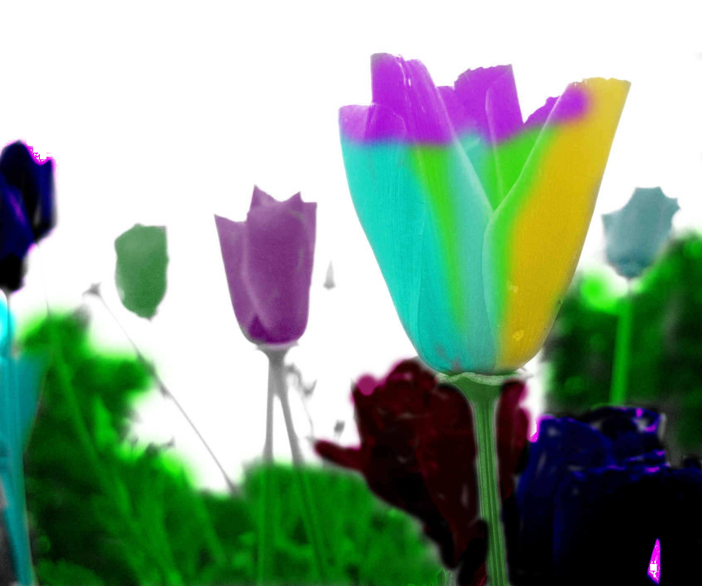

Raster Graphics
-
Basics
For my basics I wanted to do a super banana might you say. So I put a cape on a banana in the sky.
-

Layers
I really wanted to make something out of this world, so I chose to do color burn in a few places. I love the purple and black flowers because of the power they give to this.
-
Selection
For this one I wanted to do my pet gerbil, so I used a picture of him and by using Selection Tools, I turned him to some more solid colors.
-
Masking
WHen I saw one of my friends was doing something space related, I decided that I just had to do something space related as well. So I put a red tardis, a pulsar, and a space cow on a beach on mars.
-
Photo Correction
I really thought that the picture looked dark, so I brightedned things up and took care of a few of the problems I thought were really bad.
-
Text & Filters
I love fire, I think it is so cool! So I decided to do more of a dark themed fire, and it turned out great!
-
Poster
For My poster I wanted to do something special, something that appealed to me. I chose this cover of empire becausae it is first of all the hobbit, and secondly it has one of the most epic wizards of all time!!!